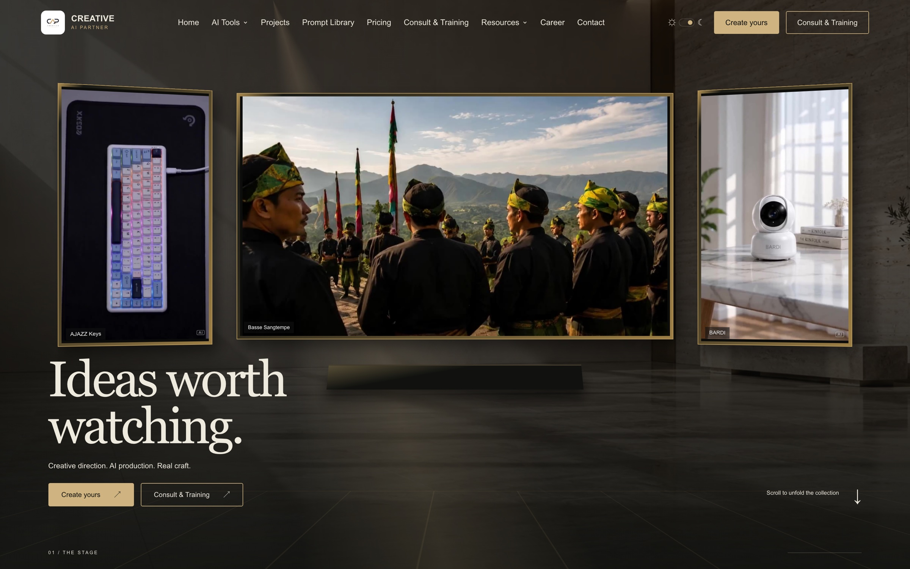
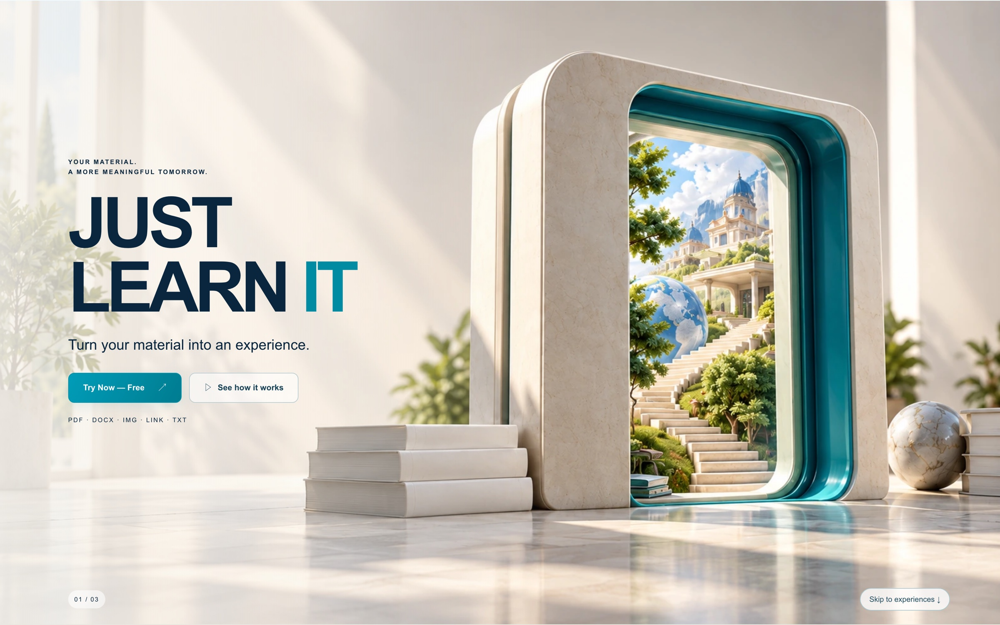
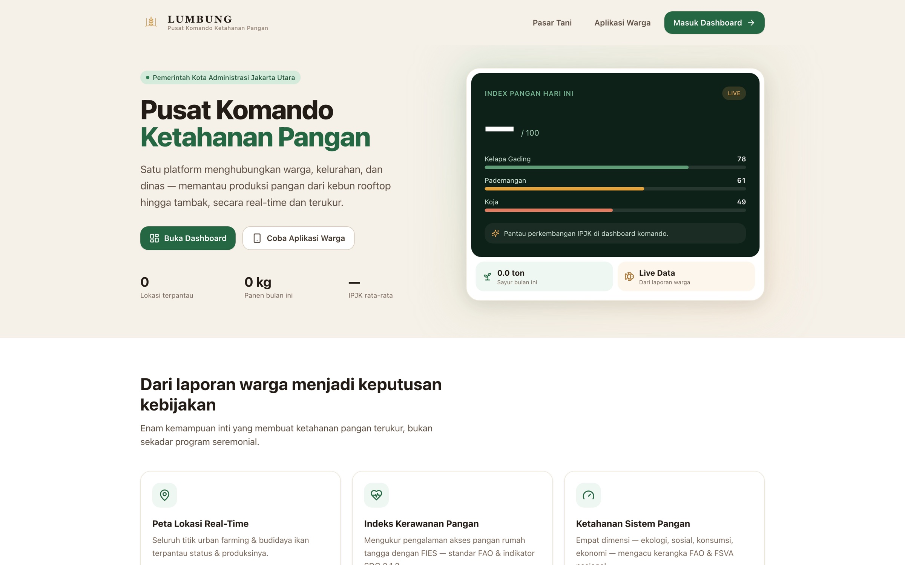

→Selected
work.
ART.
PRODUCTS.
PEOPLE.
A BRIGHTER
TOMORROW.
real products
and people’s
lives.

→
→SERVICES
Digital products
From idea to useful, working software.
AI integration
Intelligent workflows for real needs.
Business & data
Clear systems for better decisions.
Creative direction
Concept, direction, final output.